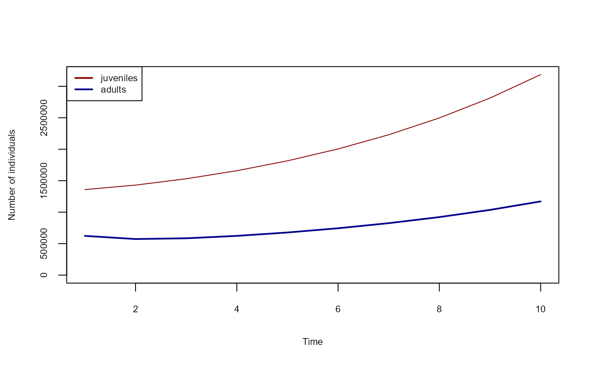

07: Age structured populations
Fallert, S. and Cabral, J.S.
Source:vignettes/A07_age_structured_populations.Rmd
A07_age_structured_populations.RmdMany species have population dynamics that require more complex equations than the simple Ricker model, which describes overcompensatory scramble competition dynamics. A common abstraction to deal with this complexity is to partition a species into functional subgroups that undergo different processes, as for example juveniles who are dispersing and looking for a habitat, who then become adults who are stationary but have the ability to reproduce and generate the next generation of juveniles. The following illustrates how to model such a system.
Basic setup
Setup the basic simulation.
raster_file <- system.file("ex/elev.tif", package = "terra")
r <- rast(raster_file)
habitat <- scale(r, center = FALSE, scale = TRUE)
habitat <- rep(habitat, 10)
landscape <- sds(habitat)
names(landscape) <- c("habitat")
sim <- create_simulation(landscape)
sim$add_species("species_1")Traits
Now we add the traits for both the juveniles and adults.
sim$add_traits(
species = "species_1",
n_juveniles = 100,
n_adults = 100,
mortality_juveniles = 0.1,
mortality_adults = 0.7,
reproduction_rate = 2
)
sim$add_traits(
species = "species_1",
population_level = FALSE,
dispersal_kernel = calculate_dispersal_kernel(
max_dispersal_dist = 8,
kfun = negative_exponential_function,
mean_dispersal_dist = 4
)
)Processes
Now we add some processes that manage the transition between the age classes.
sim$add_process(
species = "species_1",
process_name = "reproduction",
process_fun = function() {
self$traits[["n_juveniles"]] <-
self$traits[["n_adults"]] + (
self$traits[["n_adults"]] * self$traits[["reproduction_rate"]]
) * self$sim$environment$current$habitat
},
execution_priority = 1
)
sim$add_process(
species = "species_1",
process_name = "maturation",
process_fun = function() {
self$traits[["n_adults"]] <-
self$traits[["n_adults"]] +
self$traits[["n_juveniles"]] * (1 - self$traits[["mortality_juveniles"]])
},
execution_priority = 3
)More processes
And some more for the dispersal and mortality. note that we do not
need to add an mortality_of_juveniles process, since their
mortality is already included in the maturation
process.
sim$add_process(
species = "species_1",
process_name = "dispersal_of_juveniles",
process_fun = function() {
self$traits[["n_juveniles"]] <- dispersal(
abundance = self$traits[["n_juveniles"]],
dispersal_kernel = self$traits[["dispersal_kernel"]]
)
},
execution_priority = 2
)
sim$add_process(
species = "species_1",
process_name = "mortality_of_adults",
process_fun = function() {
self$traits[["n_adults"]] <-
self$traits[["n_adults"]] * (1 - self$traits[["mortality_adults"]])
},
execution_priority = 4
)Result
Lastly, we add a process that reports the numbers of adults and juveniles over time, after which we can execute the simulation and plot the results.
sim$add_globals(n_juveniles = c(), n_adults = c())
sim$add_process(
process_name = "logger",
process_fun = function() {
self$globals$n_juveniles <-
c(self$globals$n_juveniles, sum(self$species_1$traits[["n_juveniles"]]))
self$globals$n_adults <-
c(self$globals$n_adults, sum(self$species_1$traits[["n_adults"]]))
},
execution_priority = 5
)
sim$begin()
plot(
1:10,
sim$globals$n_juveniles,
col = "darkred",
type = "l",
lwd = 2,
ylim = c(0, max(sim$globals$n_juveniles, sim$globals$n_adults)),
xlab = "Time",
ylab = "Number of individuals",
cex.lab = 0.7,
cex.axis = 0.7
)
lines(1:10, sim$globals$n_adults, col = "darkblue", lwd = 2)
legend(
"topleft",
legend = c("juveniles", "adults"),
col = c("darkred", "darkblue"),
lty = 1,
lwd = 2,
cex = 0.7
)